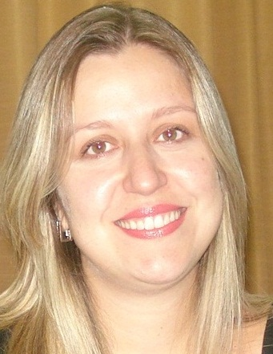

Fundamentos Basicos da Matemática elementar
Fundamentos Basicos da Matemática elementar

Andreia Piranhe da Silva
Possui graduação em Licenciatura Em Matemática pela Universidade Estadual Paulista Júlio de Mesquita Filho(1999), mestrado em Matemática pela Universidade Estadual Paulista Júlio de Mesquita Filho(2002) e doutorado em Ciências da Computação e Matemática Computacional pela Universidade de São Paulo(2005). Atualmente é Docente da Faculdade de Tecnologia de Jales, Diretora da Faculdade de Tecnologia de Jales, Membro da Congregação da Faculdade de Tecnologia de Jales e Membro de corpo editorial do Reagro - Revista Eletrônica de Agronegócio da FATEC Jales. Tem experiência na área de Matemática. Atuando principalmente nos seguintes temas:Polinômios de Szegö, Relação de recorrência de três termos, Polinômios ortogonais no círculo unitário, Polinômios ortogonais, Zeros de polinômios. (Texto gerado automaticamente pela aplicação CVLattes)
Ementa
Conjuntos Numéricos. Regras de Três. Frações. Porcentagem. Potenciação e Notação Científica. Radiciação. Logaritmos. Polinômios. Fatoração e Produtos Notáveis. Matrizes. Equações e inequações do 1o. e 2o. Graus.
Objetivos
Discutir os conceitos básicos de matemática. Objetivos específicos: O aluno será capaz de compreender as ferramentas básicas em matemática dos principais conteúdos do ensino básico, fundamental e médio necessários para as demais disciplinas do curso. Saber utilizar softwares e aplicativos como ferramentas auxiliares à resolução de problemas